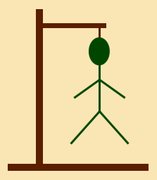
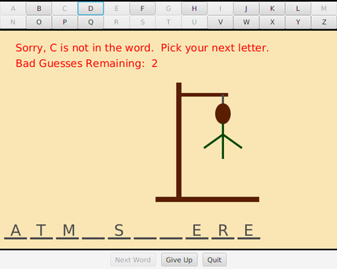

CS 124, Fall 2021
Lab 12: Hangman GUI
For the remaining labs in this course, you will work on a GUI Hangman game, or possibly on some other final project that you choose yourself. The final project was discussed in lab8.html. Working on Hangman is fine — but if you would like to do something else, you should discuss it with me before starting.
The rest of this web page is for people who are working on Hangman. You should create a new class named Hangman or HangmanGUI. You will be writing this class from scratch. In this lab, you will work on the graphical user interface for your program. You will continue to work on the project for the next two labs. You can look ahead at Part 2 and Part 3 of the project.
The completed program is due at 3:00 PM on the last day of class, Friday, December 3, and will only be accepted late for extraordinary reasons.
Teaching Fellows schedule for the rest of the semester: There will be no Teaching Fellows hours from Sunday, November 21 through Sunday, November 28. Teaching Fellows hours will resume Monday, November 29. The last day for Teaching Fellows will be Thursday, December 2.
About Hangman
 Hangman is a simple word-guessing game. You worked on a command-line version of the game in Lab 5. However, a GUI version is a different sort of program since it has to be driven by events generated by user actions.
The basic idea of the two versions is similar: At the start of a game, the computer selects a random word that the user has to guess. Initially, each letter in the word is shown as an empty space. The user guesses letters. When the user guesses a letter which is part of the word, that letter is filled in; it is filled in at every space where it occurs in the word, not just one space. The game ends when the user runs out of guesses or when the user has guessed all the letters in the word.
But in the GUI version, the letters are drawn on the computer screen, rather than output with System.out.println(). Any messages that the computer wants to display to the user have to be either drawn on a canvas or placed into a Label. When the user guesses a letter that is not in the word, a part of a "hanged man" is drawn. If the hanged man is completed before the user finds all the letters in the word, the user loses. The picture at the right shows an example. The hanged man here is complete. In my version of the game, I start with the scaffold already drawn, and the user gets 7 incorrect guesses. For the first incorrect guess, I draw the man's head; for the second, the neck; and then the left arm, right arm, body, left leg, and right leg.
Here is a GUI version of Hangman that runs on a Web page. It's written in JavaScript rather than Java, but your Java program should behave in a similar way. To play, click the letter buttons:
About Layout, Etc.
You will have to design a user interface for Hangman (or whatever program you write). The game will require 26 buttons, one for each letter of the alphabet, as well as a Canvas where you can draw the hanged man. You will also need other components or a menu bar or both. You will need to "lay out" all these components in a main BorderPane. Some of the techniques that you need were covered in the GUI Tutorial, Lab 10. Note in particular that Lab 10 shows how to use a canvas for drawing in a BorderPane, with other components in the top and bottom positions of the pane. (It is also possible to place compenents in the left and right positions of a BorderPane.) We will also talk about layout in class, and you can read about it in Section 6.5. But here are a few things you might use in this program.
To hold the 26 alphabet buttons, I used a GridPane with two rows. Each row contains thirteen buttons. To use a GridPane, you can create it with the constructor new GridPane() and then add each button in a specified row and column. Here is how I added the n-th letter button to the grid:
button.setPrefWidth(650/13); letterGrid.add(button,n%13,n/13);
The goal was to have a pane that is 650 pixels wide, to match the size of my canvas. The command button.setPrefWidth(650/13) sets the "preferred width" of the button to be 650/13 pixels. The GridPane will be sized to show all the buttons that it contains at their preferred size, so this line determines the size of the GridPane. In the next line, letterGrid.add(button,n%13,n/13), letterGrid is the GridPane. The parameters specify the component that is to be added to the grid and the column number and row number where it is to be placed in the grid. Here, n is between 0 and 25, so the column number, n%13, is between 0 and 12, and the row number, n/13, is either 0 or 1. You can see what it looks like in the picture of the game, below. You don't have to do exactly the same thing. If your program has a menubar, for example, you might put the buttons below the canvas, or on the side.

You will need to know more about buttons. You can read about them in Section 6.4. Note in particular that button.setDisable(true) will disable the button (so the user can't click it), and button.setDisable(false) will re-enable it. And button.setOnAction is used to specify an event handler for the event that is generated when the user clicks the button. You can write just one event handler method that will work for all of the letter buttons. It will just need to know which button was clicked. You should be able to do something like this:
button.setOnAction( e -> doLetterButton(button) );
In the event handler, you will need to know what letter was clicked. You can get the text from the button by calling button.getText(), and the letter on the button would then be button.getText().charAt(0).
My program has three more buttons, below the canvas. For layout, I put the buttons in an HBox, with its alignment set to Pos.CENTER, and added the HBox to the bottom of the main BorderPane. An HBox was used in Lab 10, and you can read about HBox in Subsection 6.5.3.
Part 1: The GUI
The assignment for this week is to create the GUI for your program and test that it is working correctly. In Part 2, you will implement the actual logic of the game.
Your first task is to design and set up the GUI for your program and test that it is working correctly. You can start implementing the actual logic of the game after the GUI is mostly in place. Refer back to Lab 10 for help on getting started.
For your Hangman game, you are required to have 26 buttons representing the letters of the alphabet. The user will select a letter by clicking one of the buttons. Furthermore, you must disable the button when the user clicks it, so that they can't choose the same letter again. After the user finishes with one word, the user must be able to begin a new game with a new word. At that time, all the letter buttons will have to be enabled again—this means that you will need to keep references to the alphabet buttons in an array of Buttons, so that you can loop through the entire array when you need to enable or disable all the letter buttons.
You are required to draw the hanged man, step-by-step, as the user makes incorrect guesses. You are required to display information to the user about the progress of the game, such as a message saying that the user's letter does or does not occur in the word. You are required to show all the the guessed letters in the word, with some indication of the blank spaces that have not yet been guessed. And you are required to have extra buttons and/or menu items for starting a new game and for quitting the program.
You should begin by setting up the user interface, with all the panes, buttons, etc., that your program needs. You should write event-handler methods to respond to the buttons and to menu commands if you use them, but you don't need tor write all the code inside the event-handling methods in this part of the project. For this lab, to test that the event handlers are properly installed, you might print a message in the event handler to show that it is functional. You might want to implement the disabling of the alphabet buttons when they are clicked, and you might want to start writing a newGame method that will eventually, among other things, re-enable all the alphabet buttons and select a new word. You will want to make sure that you can draw the hanged man for all stages of the game. Remember that what you draw at any given time will depend on the number of incorrect guesses.
Remember that there are two ways to manage drawing in a canvas: You can either have a draw() method that redraws the entire canvas every time the state of the game changes, or you can try to make changes to the picture in the canvas whenever the state changes. Although I prefer the first approach, either can be made to work.
You need some way to display the word to the user, most likely by drawing the characters of the word in a draw() method if you are using the first strategy. But another option might be to to show the word in a Label. Similarly, you want to be able to show messages about the progress of the game to the user. One way to do that is to have one or more instance variables of type String to hold messages, and to draw those strings on the canvas in the draw() method. To change a message, the program can set the value of the corresponding instance variable and call draw(). If you are using the second strategy for managing the picture in the canvas, you will have to erase the previous message before you can draw the new one.